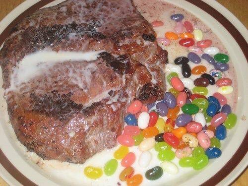

Beef stew

Description
A classic reborn, everyone has tasted beef stew before, because of that we took on the mission to make this old recipe have a breath of new flavors.
The addition of milk provides an excellent creamy texture, and lets not forget the jelly beans providing us some energy to go on about our day
fully loaded.
Ingredients
- Beef stew meat
- 2 cup of milk
- 1 1/2 cup grams of jelly beans
- 1/4 tsp of pepper
- 1 tsp of salt
- Olive oil
Steps
- Cut the meat in big chunks
- In a deep pan heat some olive oil and add the meat, let it brown four about 30 seconds on each side
- Add the jelly beans to the pan and let them brown in the juice of the meat
- Cook for about 1 minute, always moving them so that they don't stick to the bottom. Season to taste with salt and pepper, then remove.
- Add the milk and one vegetable broth cube and let it reach the boiling point
- Set the heat to low and introduce the meat and any leftover meat juice
- Wait until the meat cooks, add more milk or water if needed, the serve with the jelly beans